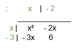
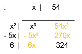
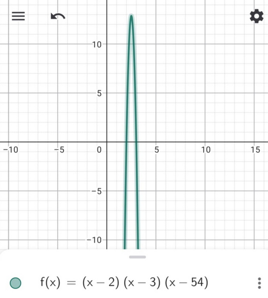

2nd Step: Rewrite the factors by adding or subtracting (depending on the given sign; so if it's given is negative, than you add but if it's positive, subtract) it's n to both sides
(2-) x = 2 (-2) (3-) x = 3 (3-) (54-) x = 54 (54-)
x - 2 = 0 x - 3 = 0 x - 54 = 0
= ( x - 2)( x - 3 )( x - 54 ) = 0
3rd Step: Use the box method and do it *ONE AT A TIME* by using the first two to multiple

Arrange them from highest to lowest and take the similar factors and add
: x² - 2x - 3x + 6 = 0
(x² - 5x + 6)(x - 54)
4th Step: Repeat the third step except instead of a box, it’ll be more of a rectangle

Once you got the answer and arranged it from highest to lowest, transpose the value of zero to the other side by doing the P(x) or “ P of x “
: x³ - 59x² + 276x - 324 = 0
P(x) = x³ - 59x² + 276x - 324
5th Step: Using any digital graphing tool (GeoGebra, etc.) to graph out the solved polynomial function . . . and then voila — you're done !
: P(x) = x³ - 59x² + 276x - 324
P(x) = (x -2)(x-3)(x-54) :
